I've always believed that travel is about more than just a change of scenery - it's about experiencing the crossroads of history and the warmth of new cultures. These are the destinations that have remained at the top of my list, each representing a unique dream I'm ready to realize.
Welcome to my curated look at the places I can't wait to discover.
Country Facts
🇯🇵
Japan
- Capital: Tokyo
- Language: Japanese
- Population: ~125 million
- Known for:Cherry blossoms, sushi, Mount Fuji
🇧🇷
Brazil
- Capital: Brasília
- Language: Portugese
- Population: ~215 million
- Known for: Carnival, Amazon, football
🇺🇸
USA
- Capital: Washington D.C.
- Language: English
- Population: ~335 million
- Known for: NYC, Hollywood, Route 66
🇹🇷
Türkiye
- Capital: Ankara
- Language: Turkish
- Population: ~85 million
- Known for: Kebabs, Istanbul, Cappadocia
Japan
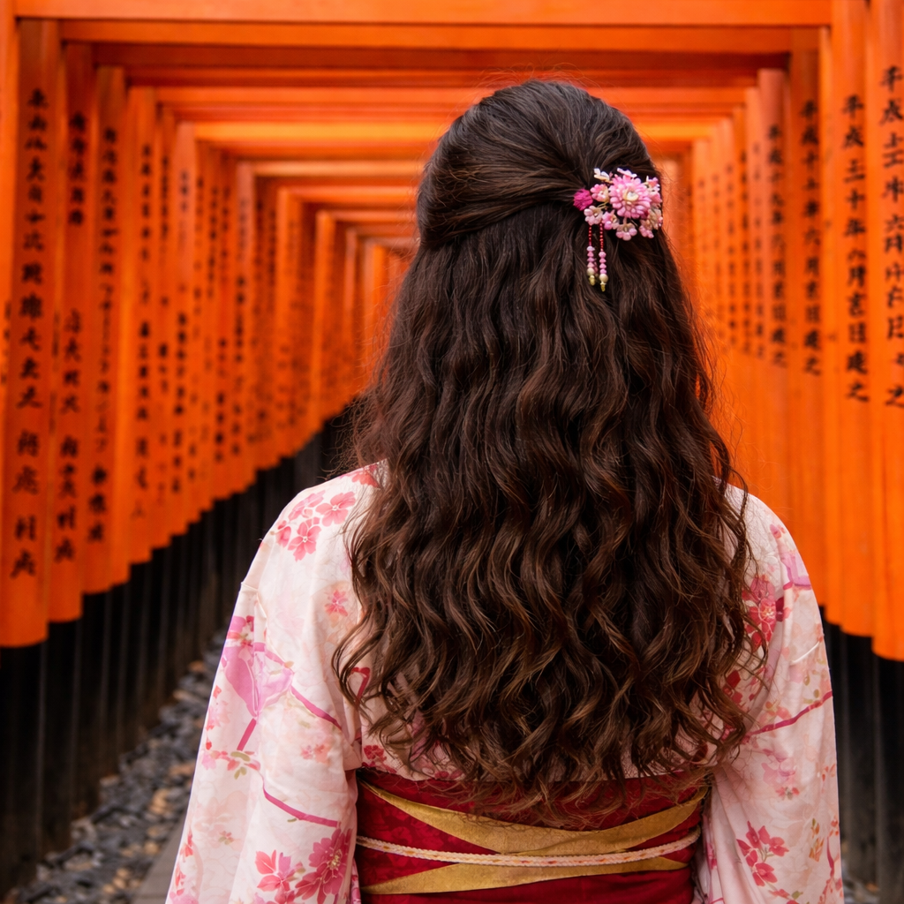
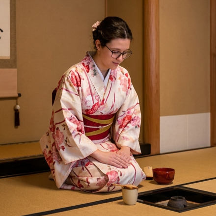
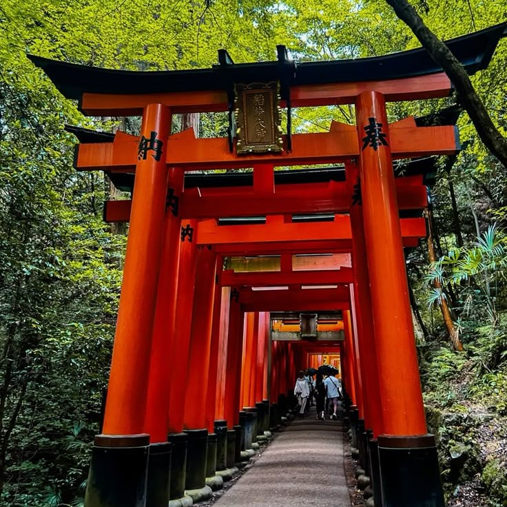
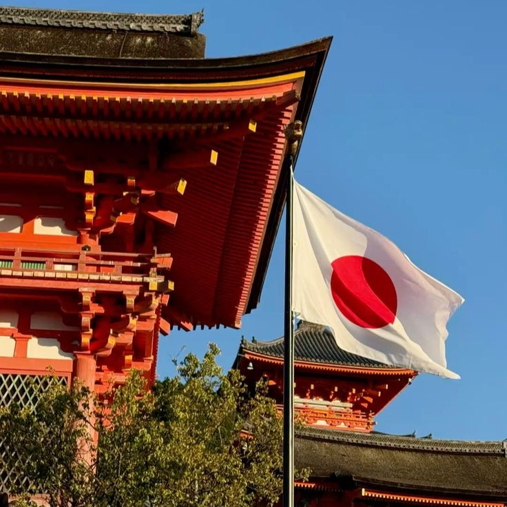
Yokoso! Japan is a land of breathtaking contrasts where ancient traditions and futuristic innovation exist in perfect harmony, making it my ultimate dream travel destination. One moment you can find yourself finding inner peace within the quiet moss gardens of a centuries-old Zen temple, and the next, you are immersed in the neon-lit, high-tech energy of Tokyos bustling streets.
Beyond the stunning visual landscape, from the iconic snow-capped peak of Mount Fuji to the delicate pink canopy of cherry blossoms, there is a profound cultural dedication to "Omotenashi," or selfless hospitality, that makes every interaction feel meaningful. Whether it's exploring the world-class culinary scene, where even a simple bowl of ramen is prepared with artisan precision, or experiencing the silent efficiency of the Shinkansen as it streaks across the countryside,
Japan offers a sense of wonder that feels both nostalgic and ahead of its time. It is a place that promises not just a change of scenery, but a completely new perspective on the world.
Brazil
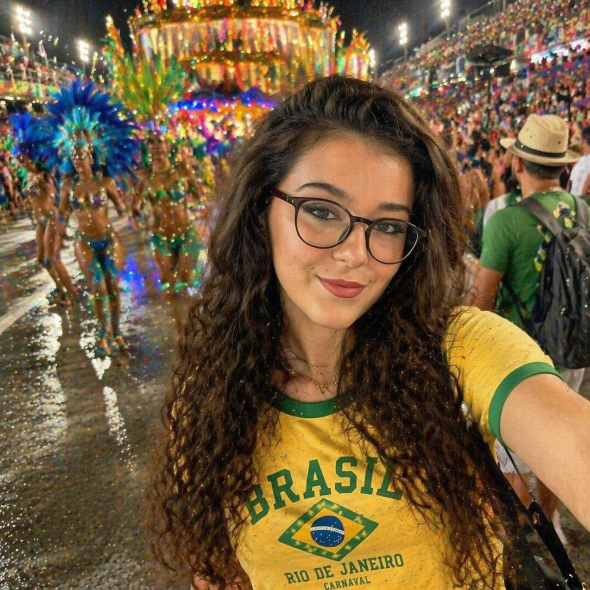
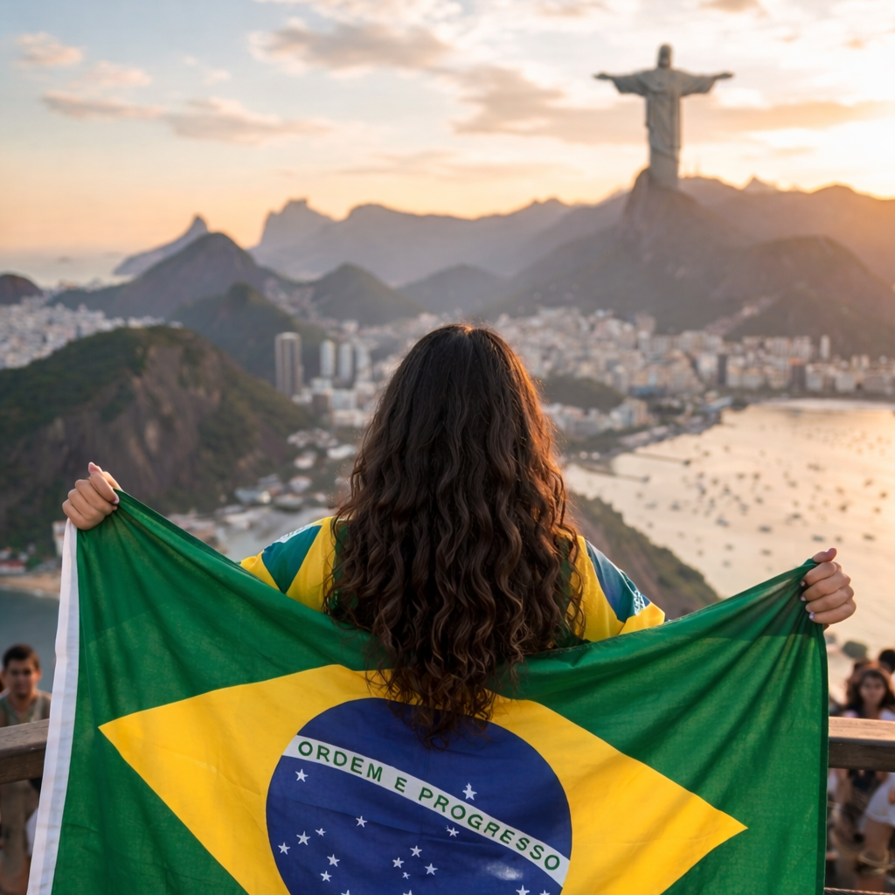
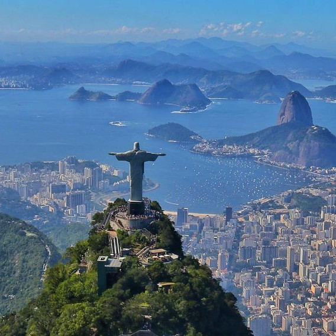
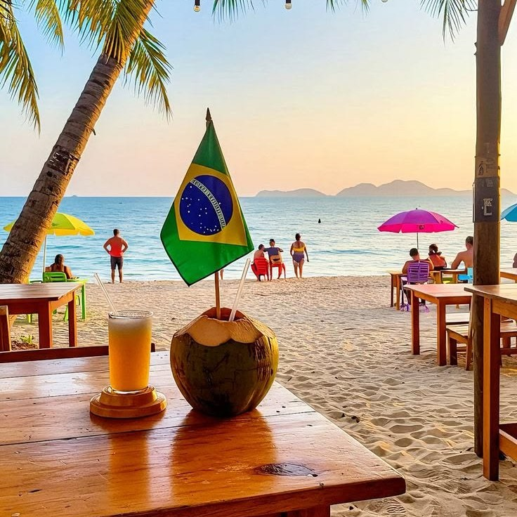
Bem-vindo! Brazil is a vibrant tapestry of electrifying energy and unparalleled natural wonder, making it one of my absolute dream travel destinations. From the rhythmic heartbeat of samba echoing through the colorful streets of Rio de Janeiro to the vast, emerald wilderness of the Amazon Rainforest, it is a country that pulses with life in every corner.
Beyond the iconic golden sands of Copacabana and the awe-inspiring power of Iguazu Falls, there is a warmth in the Brazilian people and a spirit of "Alegria" that is truly infectious. Whether it is indulging in the rich, smoky flavors of a traditional feijoada, witnessing the grand spectacle of Carnival, or finding serenity on a remote beach in Bahia, Brazil offers a sensory explosion that is as diverse as it is beautiful.
It is a destination that doesn't just invite you to visit, but encourages you to dive deep into its soul and celebrate the joy of the present moment.
New York - USA
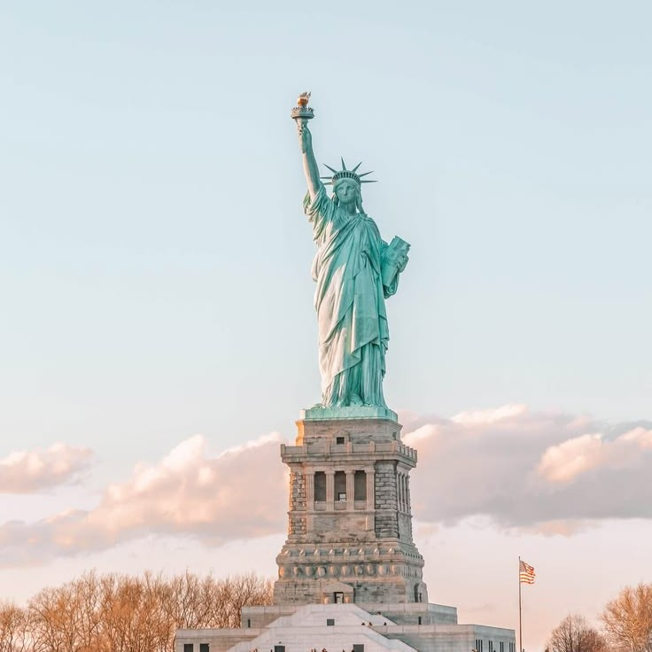
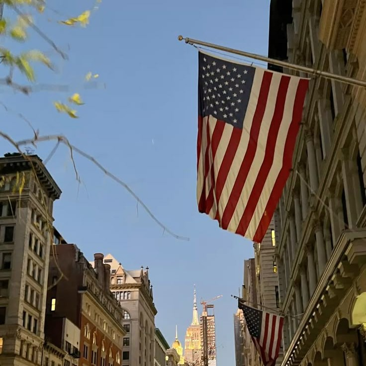
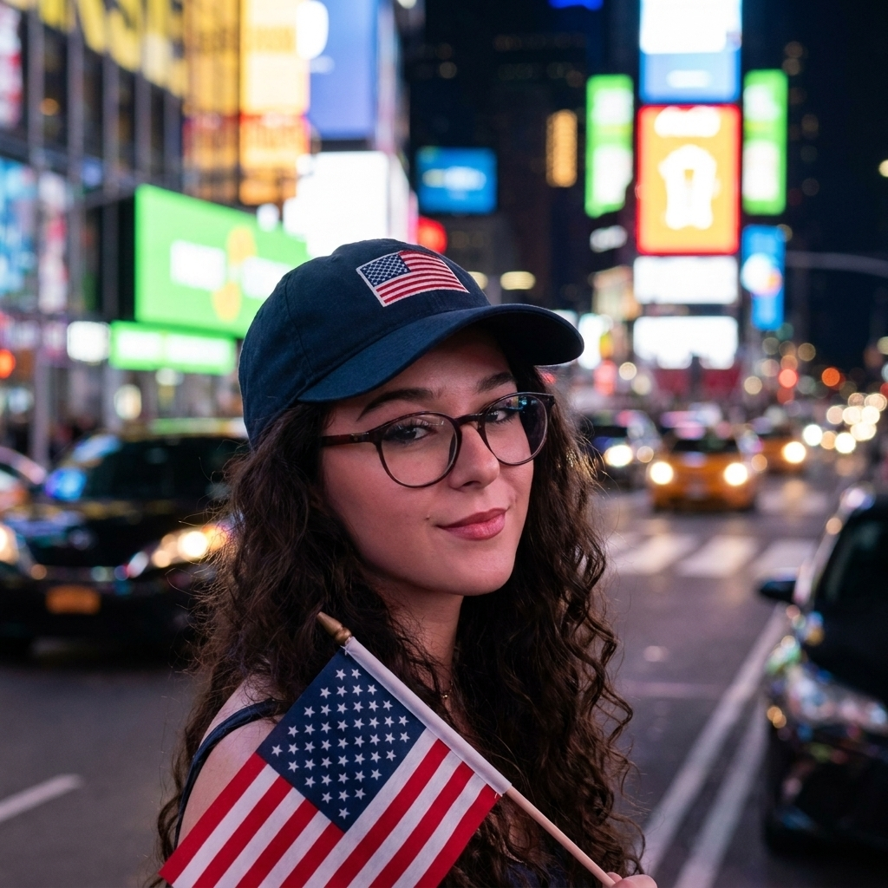
Hey, how ya doin'? New York City has always been my ultimate dream destination because it feels like the true center of the world, a place where every street corner holds the potential for a movie-moment discovery. I am endlessly drawn to the idea of getting lost in the rhythmic chaos of Manhattan, looking up at the sheer scale of the Empire State Building, and feeling the electric hum of Times Square at midnight.
Beyond the famous landmarks, I want to experience the authentic layers of the city-grabbing a dollar slice in the East Village, wandering through the quiet, leafy paths of Central Park, and crossing the Brooklyn Bridge as the skyline begins to glow. It's the unparalleled energy of eight million people chasing their dreams that makes New York feel less like a city and more like a living, breathing challenge I am desperate to take on.
The mix of world-class art, diverse culinary pockets, and that legendary "city that never sleeps" attitude makes it the one place where I know I'll never run out of things to see or ways to be inspired.
Türkiye
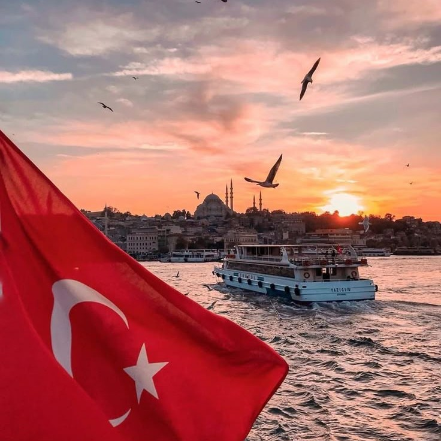
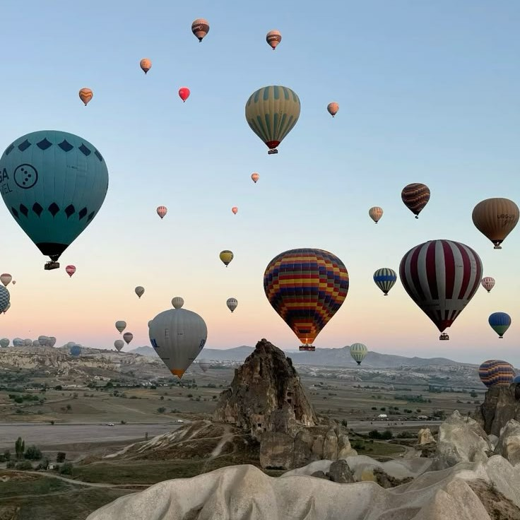
Merhaba! Türkiye has always been my dream travel destination because it is a breathtaking bridge between two continents, where thousands of years of history blend seamlessly with a vibrant, modern energy. I am captivated by the thought of waking up to the call to prayer echoing over the minarets of the Hagia Sophia and the Blue Mosque, then spending an afternoon navigating the kaleidoscopic stalls of the Grand Bazaar. Beyond the bustling streets of Istanbul, I dream of drifting in a hot air balloon over the otherworldly fairy chimneys of Cappadocia at sunrise and soaking in the thermal turquoise waters of Pamukkale's white travertine terraces.
The legendary Turkish hospitality, combined with the prospect of tasting authentic mezes and slow-cooked kebabs by the Aegean coast, makes it feel like a sensory masterpiece. It is a land where every landscape-from the rugged mountains of the east to the sun-drenched ruins of Ephesus-tells a story of empires and endurance, and I can't wait to be part of its narrative.